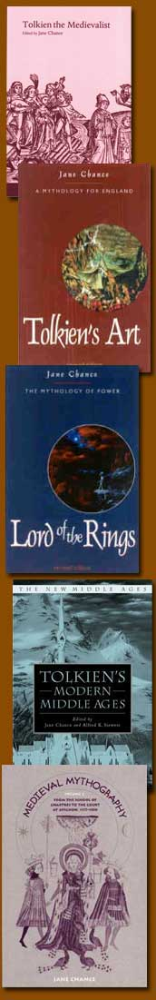

|
© 2021 Festival Art and Books. All rights reserved. A lifetime’s study of J. R. R. Tolkien: An interview with Jane ChanceJane Chance is a leading literary scholar holding the Andrew W. Mellon Distinguished Chair in English at Rice University, USA. She is also an established poet. Jane has taught medieval literature since 1971. She specializes in the reception of myth and medievalism, and has published twenty-one books and nearly a hundred articles and reviews, and delivered invited lectures all over the world. Among Professor Jane Chance’s scholarly works are a number related to J. R. R. Tolkien, including Tolkien’s Art: A Mythology for England (1979; 2001) and The Lord of the Rings: The Mythology of Power (1992; 2001). Dr Chance has also edited Tolkien the Medievalist (2003); Tolkien and the Invention of Myth (2004); Tolkien’s Modern Middle Ages (with Alfred Siewers, 2006); and two issues of Studies in Medievalism, on the twentieth century (1982) and on the Inklings (1991). She has also appeared in the National Geographic film and DVD about Tolkien’s interest in medievalism and in modern wars, Beyond the Movie: The Lord of the Rings (2001); her monographs played a role in the establishing of their website of the same name. Colin Duriez interviewed Jane Chance for the Festival online magazine. They became acquainted at an Oxonmoot, the annual gathering of the Tolkien Society in Oxford, and both appear in Ringers, the Sony DVD about the developing history and character of fans of J. R. R. Tolkien—they are also friends on Facebook. Colin Duriez [CD]: You are one of several scholars of the medieval period like Tom Shippey and Michael Drout who has made a significant contribution to J. R. R. Tolkien studies. What is it about a medievalist’s perspective that is especially helpful in understanding J. R. R. Tolkien?
Jane Chance [JC]: Because Tolkien spent most of his life from an early age and during his academic career reading works of medieval literature and studying medieval languages, it is understandable that his extensive knowledge likely triggered his imaginative recreations of the Middle Ages in Middle-earth, its history, and its inhabitants. From the moment I read The Lord of the Rings – as a new medievalist Ph.D. teaching in Canada at the University of Saskatchewan in Saskatoon – I recognized immediately the correspondences in narrative structure and genre, characterization and protagonists, symbolism and imagery, and all kinds of other literary features recast from their medieval origins. Although his masterpiece works as literature regardless of whether or not you are familiar with medieval literature, an understanding of how cleverly he has imbedded those correspondences increases your appreciation for Tolkien’s genius and allows you to resolve questions about ambiguities and conundrums in The Lord of the Rings (or at least begin to answer them) that fans have puzzled over. Tolkien never slavishly follows any medieval antecedent—he is too original a writer for that. But once you detect the presence of a correspondence, it allows you to determine, on the basis of his variance on the medieval original, what has helped shape and colour The Lord of the Rings and his other works: namely, the modern context in which he was born, and his own individual preoccupations and values. You can see the multiple levels of Tolkien’s designs, which allows for the recognition of a richness and depth in his works that signals a masterpiece. CD: You reached the conclusion, I believe, that the strongest influence on Tolkien’s fictional development came from the medieval works he most loved, such as Beowulf, Pearl and Sir Gawain and the Green Knight. (Similarly, in his close friend C. S. Lewis’s Narnian Chronicles, there was the enormous impact of Spenser’s The Faerie Queen.) What magic did Tolkien cast in transposing such works into his globally-popular fiction? JC: Tolkien democratizes the Middle Ages and medieval literature throughout his works. Tolkien nearly always celebrates Everyman in his works, by which I mean he sympathizes with the commons, with Sam the Gardener, or (literally) the little guy, figuratively, the Hobbit. Or, say, in “The Homecoming of Beorhtnoth Beorhthelm’s Son” (his drama sequel to the Anglo-Saxon chronicle entry and poem The Battle of Maldon), he inserts into the night-scene of the battle-field – where corpse-robbers hunt for treasure – his protagonists, the old farmer, Tidwald, and the young Torhthelm, who helps him load up the pieces of the massive corpse of the fallen king, Beorhtnoth. The king’s head has been severed from his body and, apparently, taken as a trophy by the enemy. How like Tolkien to suggest symbolically the irrationality of the king, who “lost his head” like so many of the weak national leaders during World War I and World War II, and failed his people by acting chivalrously toward the Danes: he allowed the Enemy to cross over from the island on which they were stranded before he would begin the battle that felled so many of his men. You can realize how deeply critical Tolkien is toward those in power who make foolish or self-aggrandizing decisions once you compare The Battle of Maldon with, say, “The Homecoming.” The magic exists in the manner by which he draws you into a medieval setting and drama by means of characters who act in a modern, anti-heroic manner, and by his critique of the medieval aristocratic concept of “chivalry”, which Beorhtnoth seems to have anticipated by a century or two. Isn’t grumpy Tidwald like Sam’s father, or Farmer Maggot, writ Anglo-Saxon? Isn’t Torhthelm, idealistic, dreamy, but foolish, much like Merry or Pippin? We can all identify. CD: When I first wrote a book on Tolkien in the nineties it was commonplace to look at Beowulf and other medieval poetry, Tolkien’s scholarly work, and his other fiction in expounding The Hobbit, The Lord of the Rings and The Silmarillion. But, in your early scholarship in the seventies, you were a pioneer in doing so, weren’t you? Why was this so? JC: There were others who had come before, in pointing out medieval sources Tolkien used—Lin Carter (1969), Bonniejean Christensen (1970), William Howard Green (1970), Sandra L. Miesel (1968), and others—but either their work, if intended for fans, only summarized some of the medieval works without any real analysis of Tolkien, or, if scholarly, appeared in academic theses or hard-to-find fanzines.
My book may have been the first scholarly treatment of Tolkien’s medievalism. When I first read The Lord of the Rings in 1972, on the recommendation of a medievalist colleague at a nearby college, I had only a year or two earlier taken several courses in Old English, Beowulf, and History of the English Language, so I immediately saw all kinds of parallels between Beowulf and Tolkien’s epic. For Old English scholar Jackson J. Campbell I had written a Beowulf-seminar paper on Grendel’s Mother, “The Structural Unity of Beowulf: The Problem of Grendel’s Mother,” after having read as required reading for the course Tolkien’s groundbreaking essay, “Beowulf: The Monsters and the Critics.” As a result, both Beowulf and Tolkien’s essay became pivotal in shaping my career and, as well, in contributing to the development of what became a scholarly (or at least more academic) direction in both Old English and Tolkien studies. I could not understand why Tolkien had insisted that there were only two important monsters, Grendel and the Dragon, to match the two great heroic moments, rising and falling, in Beowulf’s life, when it was obvious there were three major fights with monsters in the poem. Because of this, in my essay I argued that, just as the monsters Grendel and the Dragon anti-typed the roles of the Anglo-Saxon warrior and king – an idea highlighted in the imagery found in the Old English words describing them and their battles with Beowulf – so also Grendel’s Mother monstrously anti-typed that of the Anglo-Saxon female peace-weaver. Ideally, the peace-weaver harmonized relations between inferior and superior classes of warrior in the tribe through cup-passing at feasts and the peace-pledge united warring nations by marriage and progeny. I argued that the poet renders Grendel’s Mother in the construction of the second fight as an ironic peace-weaver, cup-passer, and peace-pledge through its imagery and symbolism. I published this essay in an academic journal in 1978, but its revision from seminar paper to article also catalyzed the writing of my third book, Woman as Hero in Old English Literature (1986), at a time that other Old English scholars were beginning to see that women in other Old English poems had been neglected in scholarship. The Grendel’s Mother essay (and book chapter) came to be reprinted in five other collections of essays on Beowulf, most recently, in the Norton anthology on Beowulf with the Seamus Heaney translation. In addition, in a course on Tolkien I taught at the request of both undergraduate and graduate students at Rice University in 1976, when I went to prepare my lectures and syllabus I could not find much criticism that related to Tolkien’s medieval sources. So I wrote lecture notes that became the core of my second book, Tolkien’s Art: A ‘Mythology for England,’ mostly written while I was in London on a fellowship in 1977. What I noticed chiefly were parallels between Tolkien’s essay on Beowulf and The Hobbit, both written about the same time (late-twenties–early thirties). This particular insight became the basis for an article, “‘The King under the Mountain’: Tolkien's Hobbit,” published in the same journal in 1979 in which Bonniejean Christiansen had published one of her two important Hobbit articles (North Dakota Quarterly), and also a chapter in Tolkien’s Art, published by Macmillan Ltd. in 1979. I suspected that the paradigms about the relationship between hero and monster, especially the Dragon, in Tolkien’s lecture and article on Beowulf must have been uppermost in his mind in thinking about how to make his own children’s story into the book of The Hobbit that would lead to Allen and Unwin’s demand for a sequel: initially, what Tolkien thought would be The Silmarillion, but actually was The Lord of the Rings. Likely, it seemed to me, the drama of the opposition between hero and critic/monster also coloured many of Tolkien’s other works, which were similarly inspired by other medieval genres, such as the imram, romance, and “fairy-story.” The latter genre, according to Tolkien in “On Fairy-Stories” (a lecture and essay also written and published at the same time as the Beowulf lecture/essay and The Hobbit), incorporated the journey from the real world into a “perilous realm,” or other (or secondary) world, in which the sojourner encounters monsters and obstacles and magical creatures like elves and fairies. But definitely I saw an overlay between Tolkien’s scholarly and creative work: how could one not bleed into the other, if they were being conceptualized and written at the same time? As to how the reception of my specific work from the late seventies came to influence Tolkien critics in the eighties, I truly believe that Tom Shippey’s The Road Goes Ever On (1982) was written, at least in part, because of his unhappiness with my Tolkien’s Art, which had also been published by my publisher, Macmillan, in 1979. Certainly Tolkien’s Art generally ignored Tolkien’s interest in Old Norse mythology and the sagas and, most especially, in philology, both of which are Tom’s province and not mine. Just as I had been discontented in the seventies by the lack of substance in trade books on the medieval in Tolkien and by the lack of attention to the relationship between Tolkien’s scholarship and his creative works, so also, I surmise, Tom must have been discontented by what had been left out of scholarship—so he wrote a book that has become very well-known to both Tolkien fans and scholars. (You will have to ask him if I am right.) And by writing the book, he thereby continued the practice of medievalistic interpretation, although in a different key, and set an example for later medievalists. In addition, Christopher Tolkien boosted academic interest in Tolkien’s medievalness from the seventies to the present by means of his editions of his father’s translations of, essays on, and adaptations of other medieval works—for example, Sir Gawain, Pearl, and Sir Orfeo (1975), the reprinting of the Beowulf and Sir Gawain essays in The Monsters and the Critics and Other Essays (1984), and The Legend of Sigurd and Gúdrun (2009). Further, Christopher’s editing of Tolkien’s The Silmarillion in 1977 – perhaps slow to capture the public’s interest, at least at first – only very recently has begun to receive its due as a medievalized mythology. Finally, Christopher’s edition of the volumes of his father’s The History of Middle-earth in the eighties and onward has certainly cemented scholarly interest in the construction of Tolkien’s legendarium (as it has been termed recently), but the very size and monumental nature of this contribution will take years for medievalists to digest before we see its final fruits. That contribution will also force scholars and fans to see the connections between work published during Tolkien’s lifetime and work afterward to make sense of Tolkien’s whole mythology. Tolkien scholars over the past thirty years have had to create an entire bibliography and field that is always in the process of being revised and re-revised. Any critic of Tolkien simply has to read everything written by and about him, and to acknowledge what has come before, in advance of writing any literary criticism or scholarship about him, except for the most narrow of topics in Tolkien. That is, Tolkien is in the process of becoming a Geoffrey Chaucer or Beowulf poet: there are long books of bibliography for each of these great authors. CD: Your work in the seventies on Tolkien’s project of creating a “mythology for England” was a milestone in Tolkien criticism. What is the importance of this aim of his in understanding his work? How does such an English-centredness square with the global nature of Tolkien’s attraction? Is little England’s mythology important in the wider world? JC: Thank you for noticing that! Its importance has to do, I think, with Tolkien’s conscious aim (as opposed to any subconscious co-mingling of medieval, personal, scholarly, and academic) in correcting what he saw as an imbalance in national mythologies (that is, one can hardly consider French-influenced Arthurian legends as the stuff of an English mythology). But more and more I believe we all have misunderstood what Tolkien meant by “a mythology for England.” Back in the seventies, before so many wonderful books and articles on Tolkien’s medievalism had been written, I thought he meant that England (not Britain or Denmark or Iceland or Germany/Saxony) actually already had a corpus of works in Old and Middle English that might be construed as a “mythology,” if only someone—him, of course-- might connect the dots of their medievalness into one unified schema. What he wanted to do was to distil what he saw as the narrative story, the myth, of the English heroes in epics, romances, legends, dream visions, chronicles – Beowulf, Sir Gawain, Sir Orfeo, English Arthuriana (Wace, Layamon, Malory), Pearl, Patience, Purity, The Battle of Maldon – and works that may have influenced or impacted on these English works, especially the Volsunga Saga, the Welsh Mabinogion, and Finnish folk-myths found in the form of the Kalevala.
What Tolkien actually did was a little different, I now think, given the publication of The Silmarillion, Unfinished Tales, the two volumes of The Book of Lost Tales, and the other volumes of The History of Middle-Earth. By creating a history of Middle-earth and its three ages verging on four, Tolkien is recapitulating the history of England as if understood, say, by Geoffrey of Monmouth, that is, beginning with the legend of the exiled Brut, great-grandson of Aeneas, founder of Britain, and, in Tolkien’s case, continuing on until the end of the Middle Ages. And because England is part of Europe, that larger context is also important. You must read “The Cottage of Play” and “Kortirion Among the Trees” in The Book of Lost Tales 1, “Aelfwine of England” in The Book of Lost Tales 2, and The Silmarillion to see the vertical and horizontal dimensions of the whole mythology. As Tolkien says at the beginning of “Aelfwine of England,” “There was a land called England, and it was an island of the West, and before it was broken in the warfare of the Gods it was westernmost of all the Northern lands, and looked upon the Great Sea that Men of old called Garsecg; but that part that was broken was called Ireland and many names besides, and its dwellers come not into these tales” (p. 319). Of course “Aelfwine” is Eriol, father of those who founded England and son of the heroic Eärendel the Mariner (whose name and ultimate apotheosis as a star are taken from the star Earendel in the Old English Crist 1 and whose redemptive story ends The Silmarillion). Tom Shippey tries to show that there is no consistent parallel between England and Tol Eressëa, the “Lonely Isle,” in the new revised edition of The Road to Middle-earth: How J.R.R. Tolkien Created a New Mythology (2003), but it appears Tolkien wanted there to be, despite any inconsistencies in what he did not publish during his lifetime. CD: Have you found any leads in medieval studies as to the origins of what Tolkien called ‘sub-creation’—the whole matter of secondary worlds and realms of Faerie? JC: I think the key there is the Middle English Sir Orfeo, a poem Tolkien loved, translated, and mentioned in “On Fairy-Stories.” Sir Orfeo falls asleep under a tree and is transported by fairies to another world, their world—a story drawn from Irish saga and its myth of the underworld. In Greco-Roman myth, Orpheus descends into Hades, ruled by Pluto—the after-life. Tolkien uses the myth to reinforce what Joseph Campbell described as the phases of the hero’s journey as departure and return (a bit like “There and Back Again,” in The Hobbit’s title), in The Hero with a Thousand Faces. Tolkien also uses this paradigm polysemously, or analogously, to describe the reader’s journey from the primary world into the secondary world of narrative fiction. And it is also the Christian’s journey, to the Heavenly Jerusalem, after death, as the fourteenth-century Middle English poem Pearl (also translated by Tolkien) makes clear. CD: It seems to me an irony that Tolkien seems in many ways an arch-conservative, a tory royalist, and a pre-Vatican II Roman Catholic. Yet his dominant theme of power and its corruptions in The Lord of the Rings is richly evocative and seems hugely pertinent to our troubled modern times. I love what you wrote in The Lord of the Rings: The Mythology of Power—‘Tolkien provided a voice for the dispossessed’ (p. 8). How do you see Tolkien as a modern writer in his portrayal of power? You clearly see him as having credibility for post-moderns. JC: Tolkien is a man whose doubleness pervades everything he did and wrote. The very fact that he published scholarly articles but hid from the public, for some time, the fictional development of his created world, suggests that his presence in the real world did not allow for the emergence of his private self, immersed as it was so much of the time in his imaginative fantasies. And he was a medieval scholar, familiar from his earliest years with the ideal of kingship as described, for example, by Dante in De monarchia, based analogously on a view of the cosmos as ruled by divine Providence—all of which Tolkien imbues his created world with, from The Silmarillion through The Lord of the Rings. Unfortunately, this medieval ideal of how the world should be, however much a part of the royalist and Roman Catholic value systems, is rarely realized in the real world. I think his disappointment over the failures of European and British leadership evident in the wars and depression of the early- to mid-twentieth century and over their accompanying intolerance, as manifested by racial, national, class, and religious discrimination against those who are different, are all refigured in his own characters’ failures—whether those of Fëanor, Galadriel, Túrin Turambar, Saruman, Denethor, or, even, and especially, Frodo. So Tolkien joins his contemporary George Orwell, for example, among others, as a fantasist who longs for a different, better world, in Tolkien’s case, demonstrated by cosmic forces akin to Providence aiding what is good. Where he is modern, and how he differs from the medieval, lies in his fantastic realism: there will always be a Morgoth/Melkor to challenge that good, because that is how Eru/Iluvatar forethought Arda and Middle-earth. There will always be a horrible moment when the hero Frodo – like Bilbo, “only quite a little fellow, after all,” as Gandalf remarks in The Hobbit – succumbs to temptation, and fails. Fortunately, in fantasy, at least in Tolkien’s construction of the cosmos of Middle-earth, there will always be a moment when the enemy, at the worst possible moment, in battling the hero also succumbs to temptation and saves the world (and the hero, from himself), as Gollum does. This curious and simultaneous oxymoron – a medieval modernness – is brilliantly realized in The Lord of the Rings, and allows Tolkien to be perceived as also post-medieval. It also opens the door to understanding his postmodernism: the tools of contemporary literary theory can be used to explore how Tolkien envisions otherness and difference in his created world, whether those tools involve feminist, gender, and queer theory, psychoanalytic theory, post-colonialism, reader-response theory, among others. In this case, it helps to understand Tolkien’s alleged conservatism in religion and politics by noting that to be a Catholic in England was to be a member of a minority group, as it was to be born outside of England, as Tolkien was, in South Africa. Finally, socially, Tolkien came from a poor family living in unfashionable Birmingham in the similarly unfashionable region of the West Midlands and was an orphan at twelve whose guardianship was taken up by Father Morgan, a priest at his mother’s church, rather than by an aunt or uncle. I cannot imagine how Tolkien felt as a boy and then a young man, given the social strictures of life at King Edwards School and Oxford and his own intellectual giftedness, both of which must have set him apart from others as almost a Dickensian figure. He surely sympathized with the dispossessed on all counts, because he was himself so dispossessed of almost everything that mattered in his world. He was in fact a Hobbit, as he himself declared in a letter. CD: How did you come to be so concerned with expounding Tolkien’s fiction? Am I right in supposing that you have written twenty-one books as a medieval scholar, seven of which are on Tolkien? JC: Why I originally chose Tolkien as a subject for a book stemmed from my belief that his literary genius had been generally unappreciated by critics and scholars in the sixties and seventies. I wanted to show how complex his artistic vision was, and how original. Having admired his Beowulf essay in graduate school, I knew how significant his interpretation had been for the development of Old English studies in the twentieth century and I wanted to indicate how similarly important as a work of literature it was: he used metaphors and little stories throughout the Beowulf essay as if it were a work of fiction. And, of course, how important as such a work was The Lord of the Rings, which inverted his practice in the Beowulf essay, by incarnating what Tolkien knew about the Middle Ages – medieval ideas, myths, and images – throughout. Although there had been interesting books about Tolkien written before I decided to write my first – particularly by Paul Kocher and Randel Helms – no one had detected in any comprehensive way the relationship between his scholarship and his creative work, or his medievalism. In some ways I felt indignant over his lack of recognition as an important modern writer and wanted both to correct that view if I could and, well, protect him from the savagery of the critics he loathed in the Beowulf article. How I came to be concerned with expounding Tolkien’s fiction has a multiple answer (of course!), mostly based on accident, chance, and serendipity. One day in the seventies an editor from the University of Texas Press came to my department seeking book proposals, so I quickly wrote up a description of a book on Tolkien about his medievalness (as based on my lecture notes for the Tolkien course described above). The editor encouraged me to send in a sample chapter, so I wrote what is now chapter one of Tolkien’s Art; the press liked it and asked for a few more, which I then added. But when they had three chapters in hand, they decided they didn’t want the book after all. Left with half of a book and faced with an upcoming tenure and promotion decision, I wrote the remainder in England and submitted it to presses there, where Macmillan Ltd. accepted it. As a result of writing that book, a medieval scholar who had read my first book, on The Genius Figure in Antiquity and the Middle Ages (1975) for Columbia University Press (George Economou), recommended me to the editor of Twayne’s Masterwork Series at Twayne Publishers/Macmillan to add a book on Tolkien to their list, which I was happy to do because it acknowledged that The Lord of the Rings was a masterwork: The Lord of the Rings: The Mythology of Power (1992). I also wanted to show that Tolkien could be read as a modern and not just medieval writer and that he was capable of the kind of sophistication that contemporary theorists were fascinated by (he was postmodern Foucault’s contemporary, for example). Both this book and Tolkien’s Art were revised and issued as what you call “companion volumes” by University of Kentucky Press (2001). How did I happen to edit the other books on Tolkien? Because of my interest in Tolkien’s medievalism, I joined the editorial board of Studies in Medievalism at the invitation of founder Leslie Workman as the twentieth-century expert and edited two issues, one on Medievalism in the Twentieth-Century (vol. 2:1, 1982) and one on The Inklings and Others (vol. 3:3, 1991; published with vol. 4:1 by Boydell and Brewer). And, when the Peter Jackson films were announced and Tolkien began receiving more publicity, I organized the first meeting of Tolkien at Kalamazoo in 2001, a sponsoring organization for paper sessions intended to explore Tolkien’s medievalism, analogous to Shakespeare at Kalamazoo and Spenser at Kalamazoo, which came to be held annually at the International Congress of Medieval Studies at Western Michigan University. My idea was to pre-edit accepted papers before the conference so that I might publish the best, in expanded form, in collections relating to this subject. Out of this venture came three volumes: Tolkien the Medievalist (Routledge, 2002, rpt. 2003, rpt. pb. 2008); Tolkien and the Invention of Myth (University of Kentucky Press, 2004; rpt. 2005); and, with Alfred Siewers, Tolkien’s Modern Middle Ages (Palgrave Macmillan, 2005; rpt. pb. 2009). After which, I was exhausted, and handed over the organizing of Tolkien at Kalamazoo to someone else! CD: On what is Tolkien’s quality as a modern writer based? JC: Where do I start? Surely his quality is based on his literary accessibility—to old and young, academic and non-academic, fans and scholars, a global audience of many different nations. His readability: if you listen to him read aloud, his cadences are biblical. He tells a good story. His characters, both evil and good, are believable and three-dimensional. I have reread most of his works many times in teaching a Tolkien course over the past thirty-four years, and every time I reread him I learn something new, gain some different understanding of his meaning. In fact, I like to use a brand-new copy of his work each time I teach him because it forces me to read each page afresh and thus “see” his text differently. How many authors is that true of—Dante, Chaucer, Shakespeare, Joyce? I remember that, in one of my classes on Tolkien at Rice, a visiting member of the Royal Shakespeare Company one year directed the class in acting out a scene from Two Towers, in which Wormtongue convinces Théoden that he is weak and Gandalf convinces him that he is not by revealing what a slimy worm Wormtongue is. Her direction helped the class understand the various motivations of each character involved in the scene and, therefore, the different ways each speech might be performed. The depth of Tolkien’s understanding of human frailty is limitless; the dramatic potential of his writing is surprising—as Tolkien smials around the world know, because they read him aloud, sing his songs, act out his scenes, and role-play. I attended the Madrid smial once when its members met for an entire day to do just that. Tolkien is a world author. He belongs to all of us. CD: The academy has often resisted attempts to take Tolkien’s fiction seriously, sometimes dismissing The Lord of the Rings as merely an adventure yarn, a spiffing tale, for boys who’ve not grown up, or seeing it as just a children’s story. I heard a distinguished British literary critic dismiss it as “boring”. How have you fared as a respected medievalist in talking about Tolkien in the same breath as Beowulf or the fabliaux of Chaucer? JC: Some of my colleagues in the English Department at Rice laugh when my course on Tolkien is brought up—they think he is a joke. I am sure that I have been dismissed on occasion by some medievalists as lightweight because of my interest in him, or that my other work in some other way has been trivialized. This is probably a holdover from the day when anything popular was regarded by the academic world as crass and lacking in quality or depth, so much so that scholars were advised by their mentors not to publish any book anywhere except with a university press. But from what I can tell, these critical academics have not actually read any of his work; they assume because he has become so well-known, especially post-films, that his importance will fade once popular memory of the films fades. How unfamiliar these critics also are with the current situation in the United States in regard to the study of Tolkien as a medievalist. Medievalists, especially younger ones, throughout the United States have eagerly adopted their own Tolkien courses, or taught courses in which his work plays a central role, because he draws students and elevates the study of the Middle Ages as central to English Departments (medieval studies has diminished in importance throughout my country partly because of the postmodern-theory-influenced decline of interest in history and philology; as a field of specialization, it is increasingly combined with study of the Renaissance). For this reason of his growing popularity and importance in the English literature curriculum, the Modern Language Association of America has approved the idea for a collection of essays on teaching Tolkien in their seminal Approaches to Teaching Literature series. This volume will greatly enhance Tolkien’s academic authority as a major world author for all time. Further, dissertations on Tolkien are increasing in number everywhere; I get asked to serve as an external examiner of dissertations and theses involving Tolkien throughout the world. This means that in the future these incipient medievalists and Tolkienists will filter into English Departments and the castigation of the study and teaching of Tolkien will likely drop off. But otherwise, my other work on the Middle Ages, especially on medieval women and mythography, has continued to receive awards and prizes and to be solicited for publication. I am and have been invited to deliver many keynote and plenary lectures around the world. I serve as the Old and Middle English specialist on the advisory board of the prestigious Publications of the Modern Language Association and just served as chair of the Modern Language Association Committee on the Roth Prize for the Best Translation in English. I continue to edit two medieval series as general editor, for Boydell and Brewer and Praeger Publishers; I am on the advisory board for two other journals, postmedieval: a journal of medieval cultural studies and College Literature. In fact, I have to decline many offers that I receive—I just don’t have time to do everything. So, no. I don’t think my interest in Tolkien is currently interfering with my stature as a medievalist. In fact, the very latest hot topic in medieval studies is the modern and postmodern cultural reception of the Middle Ages in all media: see above, the brand-new journal postmedieval published by Palgrave Macmillan. CD: How do you put in context the phenomenon of modern medievalism not only in Tolkien, but in Charles Williams, C. S. Lewis, T. H. White and others? Why does the modern world seem to need to know about (or, in the case of readers of Tolkien and others) even experience the medieval world? JC: A nostalgia for the distant past and for fantasy, in particular, given the rigors of life in the present (the answer lies in “On Fairy-Stories”—escape, recovery, consolation); a yearning for a simpler and happier time, or what is erroneously perceived as simpler; and a substitute for organized religion, which all the Inklings seem to supply in some mediated form. CD: I’d be fascinated to know if you, as a medievalist, think it is possible to separate out the Celtic and northern European influences upon Tolkien—or does he see a deeper, underlying affinity between them (as he did, presumably between the Finnish and Welsh languages when they inspired the main variants of his invented language, Elvish)? JC: The answer to this question I hope will be in part answered by the conference on “Tolkien and Wales” at the Festival in the Shire next August! I would imagine that it will be possible to extricate the two influences. I really don’t have any answer to this question except the northern European influence seems more important than the Celtic, from what I have been able to tell. Perhaps that is because so much of the work done on Tolkien’s medievalism thus far has focused on the northern European influence. CD: Two of your seven Tolkien-related books are companion volumes—how do they relate to each other? Do you have plans for more? JC: Tolkien’s Art: A Mythology for England and The Lord of the Rings: The Mythology of Power can be viewed as complementary in subject matter because I wrote the second book, only on The Lord of the Rings, to focus on Tolkien’s modernity and postmodernity instead of only his medievalism. But in fact they only became companion volumes when they were later revised and published simultaneously by University of Kentucky Press. After I completed Tolkien’s Art, I realized that I had a lot more to say about The Lord of the Rings (much more than one chapter could contain), so the offer to write a book just on The Lord of the Rings, and was a boon. (See above, also) I would like to write a book on Tolkien and the problem of difference—as my recent articles on Tolkien and various kinds of otherness have indicated, whether relating to sex and gender, class, race, ethnicity, or sexual preference (most recently, “‘The Company of Orcs’: Peter Jackson’s Queer Tolkien,” in Kathleen Coyne Kelley and Tison Pugh’s Queer Movie Medievalisms, Ashgate, 2009). And/or perhaps a sampler collection of my articles on Tolkien, before I retire. CD: At the Festival we going to have music, art, dance, story-telling, learned presentations, more introductory talks, and much more, all inspired in their particular creativity by one man and his vision. Do you think Tolkien fans are a unique breed, given that they have taken on such a complex and many-layered object of appreciation? JC: The Society for Creative Anachronism (in the U.S.) celebrated the Middle Ages similarly, through costumes, staged battles, the making of armour, medieval music and dance, medieval horseback riding, and presentation of other forms of information about the medieval. But as far as I know, no other single author has quite engendered such a wide variety of kinds of participation. Don’t forget that he also inspired the development of fantasy as a popular genre and of videogames, so medievalized in subject matter and process that there is an organization of paper-sessions and demonstration at the Annual International Congress of Medieval Studies at Western Michigan University-Kalamazoo in May that it goes by the name of The Neomedievalism Society. No other literary author fan-group of which I know has an established webpage (theonering.net—along with many other webpages by individual fans and Tolkien societies) and a DVD that records their history (Ringers: The Lord of the Fans). Are Tolkien fans unique? Surely they are. Any Mythopoeic Society Conference or Oxonmoot attracts a wide variety of participants of all ages, vocations, education levels, nationalities, and skill levels unique in the world of conferencing, from what I can tell. Tolkien scholars and fans give papers at the same conference and publish in the same venues, whether academic journal or fanzine. To understand Tolkien requires due diligence in every respect. The enthusiasm of fans spurs their active participation and continued learning (even fans have a place in Tolkien’s world of Middle-earth) just as does the desire to pioneer in a new discipline that involves a multi-layered author spurs scholars. Tolkien the author, who blended his interest in learned scholarship with his love of imaginary worlds, was not so unlike the fans and scholars he has attracted around the world. |
 |